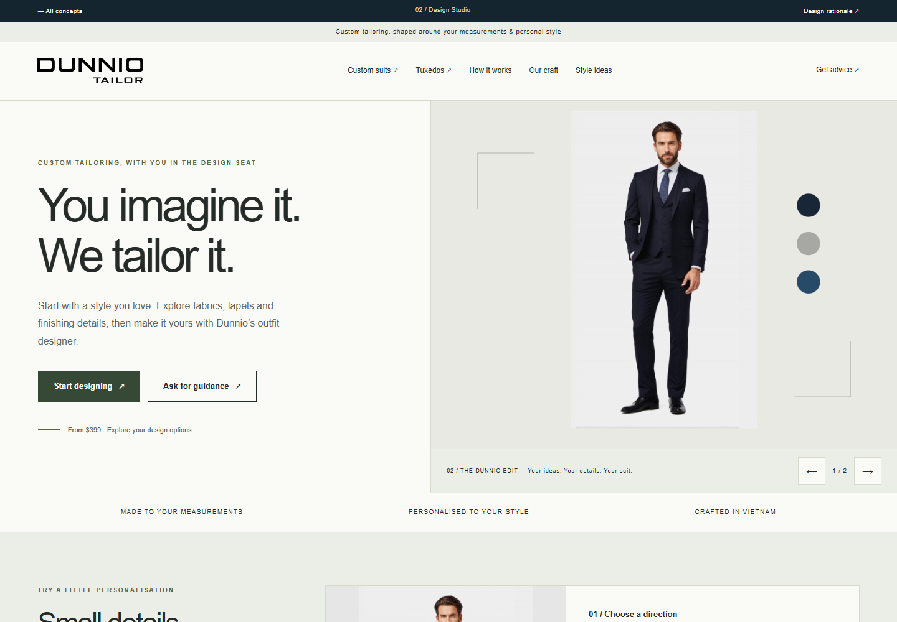
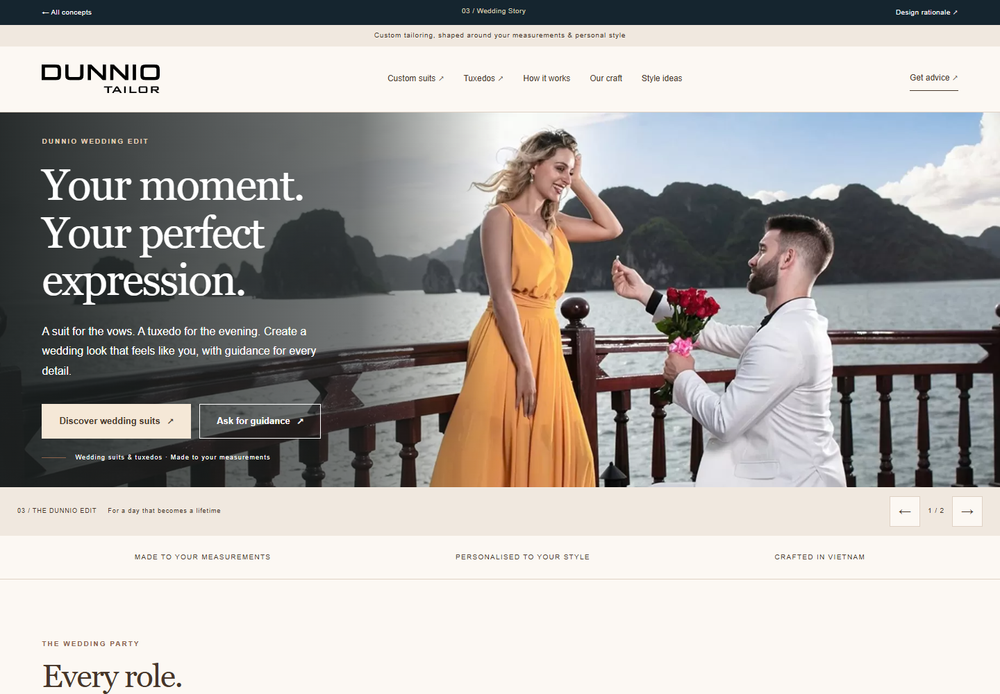
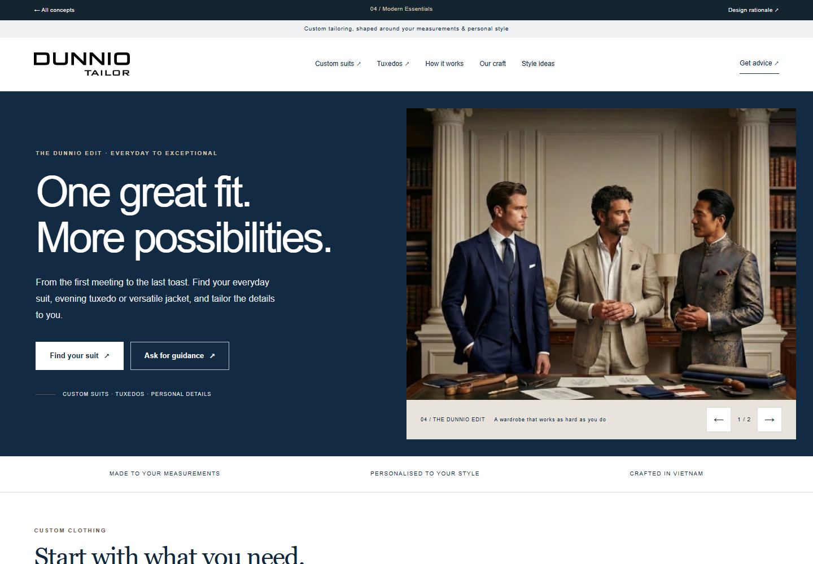
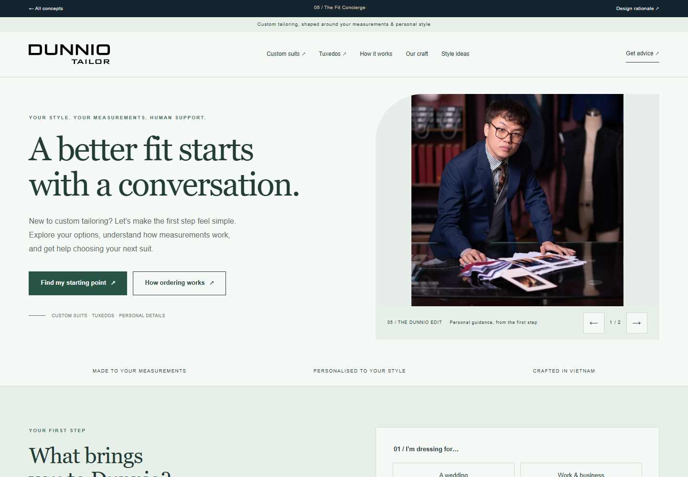

BRAND REVISION / 12.10.2026
Giữ năm góc nhìn.
Thống nhất một
thương hiệu.
Bản trước/sau giúp BOD đánh giá việc chuẩn hóa màu và typography. Đây là hình ảnh render từ prototype, không phải kết quả A/B test.
Gold/white chỉ 2.25:1; CTA gold dùng chữ navy đạt 7.35:1. Primary/deep navy tạo hệ chữ và nền tối nhất quán. Xem vai trò, kiểm chứng và giới hạn.
01 / Heritage Atelier
Heritage Atelier
Bản hiệu chỉnh dùng white làm nền editorial, primary navy cho chữ/logo và gold cho CTA, đường nhấn công đoạn. Góc vòm và nhịp workshop-first giữ bản sắc atelier, trong khi olive/bronze cũ không còn là màu UI. Heading Garamon Pro Display 400 kết hợp Afacad cho phần đọc và điều hướng.


Mở trang đã hiệu chỉnh ↗ · Mobile trước · Mobile sau, toàn trang


02 / Design Studio
Design Studio
Studio dùng canvas white, controls primary navy và CTA gold. Dải inspiration dùng dark blue #111A4C. Heading sans-serif Afacad giữ tính trực tiếp; swatch garment vẫn thể hiện hướng vải, có pressed state và viền chọn, không được hiểu là màu nhận diện thương hiệu.


Mở trang đã hiệu chỉnh ↗ · Mobile trước · Mobile sau, toàn trang


03 / Wedding Story
Wedding Story
Wedding Story dùng deep-navy scrim ở hero lớn, CTA gold/navy và phần nội dung white. Copy được tách khỏi ảnh khi màn hình hẹp hoặc không đủ chỗ. Typography Garamon Pro Display tạo nhịp dịp lễ; màu champagne/walnut trước đây được thay bằng cùng hệ thương hiệu Dunnio.


Mở trang đã hiệu chỉnh ↗ · Mobile trước · Mobile sau, toàn trang


04 / Modern Essentials
Modern Essentials
Hero dùng đúng primary navy #0B1F3A, chữ white và CTA gold/navy. Catalog white, lọc navy/white với đường nhấn gold và giá rõ. Afacad ở hero và các nhãn hỗ trợ tìm nhanh; Garamon Pro Display ở nội dung editorial giữ hơi thở tailoring.


Mở trang đã hiệu chỉnh ↗ · Mobile trước · Mobile sau, toàn trang


05 / The Fit Concierge
The Fit Concierge
Fit Concierge dùng white làm nền, primary navy quanh chân dung và controls, gold tại CTA/feedback accents. Góc cong và flow chọn nhu cầu giữ cách tiếp cận hỗ trợ; sage/green cũ được thay hoàn toàn ở lớp UI. Serif Garamon Pro Display kết hợp labels Afacad dễ đọc.


Mở trang đã hiệu chỉnh ↗ · Mobile trước · Mobile sau, toàn trang